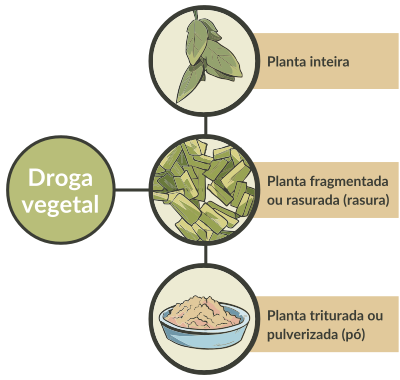
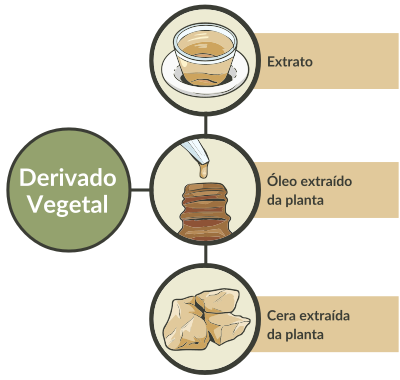

Os fitoterápicos podem ser disponibilizados na forma de droga vegetal inteira, rasurada, triturada ou pulverizada, ou de derivado vegetal (ou preparação vegetal), como tinturas e extratos fluidos ou secos, de maneira isolada ou ainda incorporada em veículos nas diversas formas farmacêuticas. Observe nas Figuras as diferentes formas da droga vegetal e do derivado vegetal que compõem o fitoterápico.
Diferentes formas da droga vegetal e do derivado vegetal que compõem o fitoterápico


Droga vegetal: são plantas inteiras ou suas partes, que contenham as substâncias responsáveis pela ação terapêutica, geralmente secas, não processadas, podendo estar íntegras ou fragmentadas. Também se incluem exsudatos, tais como gomas, resinas, mucilagens, látex e ceras, que não foram submetidos a tratamento específico (Brasil, Anvisa, 2013; 2025).
Derivado vegetal: produto da extração da planta medicinal fresca ou da droga vegetal, que contenha as substâncias responsáveis pela ação terapêutica, podendo ocorrer na forma de extrato, óleo fixo e volátil, cera, exsudato e outros (Brasil, Anvisa, 2013, 2025).
A RDC 1.004/2025 substituiu este conceito pelo conceito de preparação vegetal, que são "preparações homogêneas, obtidas a partir de drogas vegetais submetidas a tratamentos específicos, como extração, destilação, expressão, fracionamento, purificação, concentração ou fermentação, por exemplo: extratos, óleos, sucos expressos, exsudatos processados e drogas vegetais que foram submetidas à redução de tamanho para uma aplicação específica, como drogas vegetais rasuradas para elaboração de chás medicinais ou pulverizadas para encapsulamento" (Brasil, Anvisa, 2025).
Embora a RDC 1.004/2025 seja aplicada aos fitoterápicos industrializados, as normas para fitoterápicos manipulados continuam com o conceito de derivado vegetal até o momento.